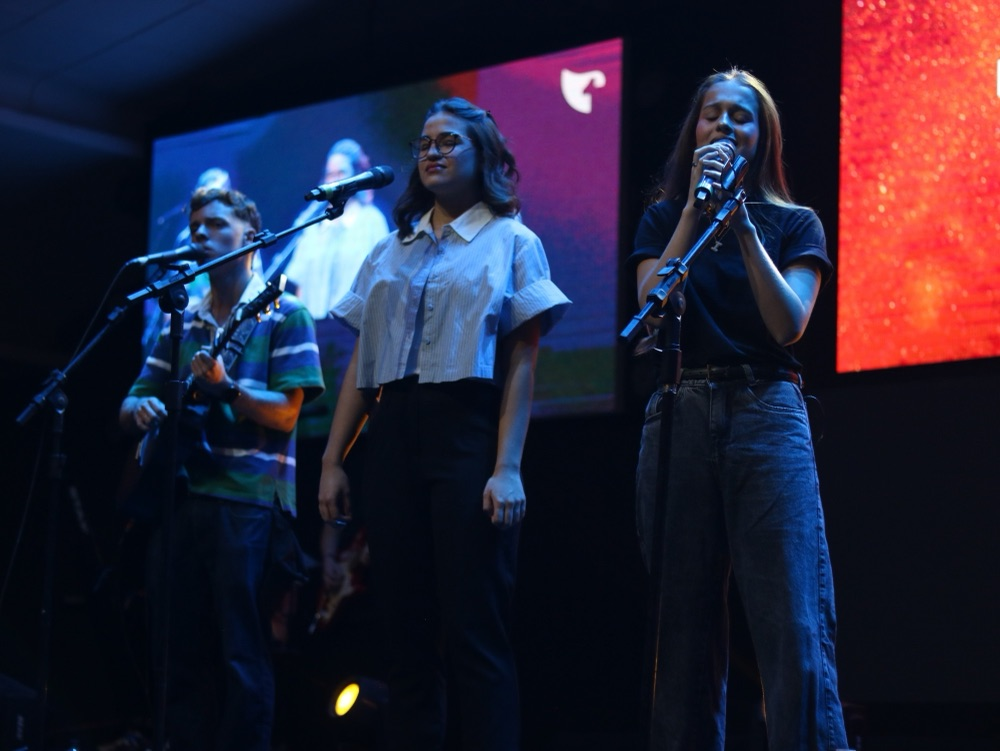
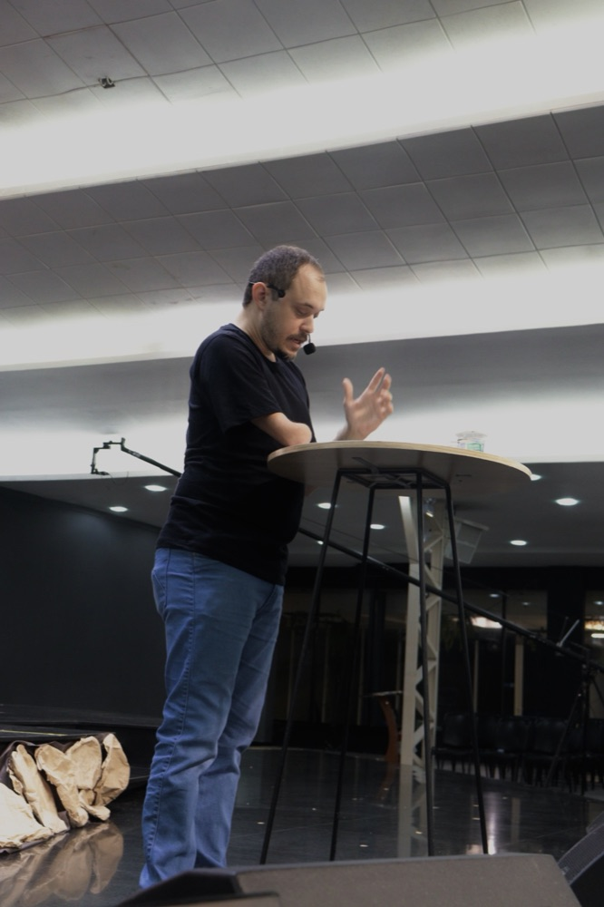
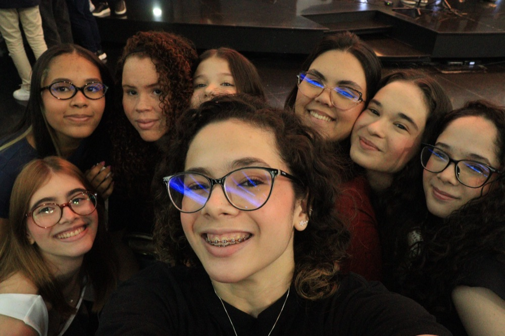
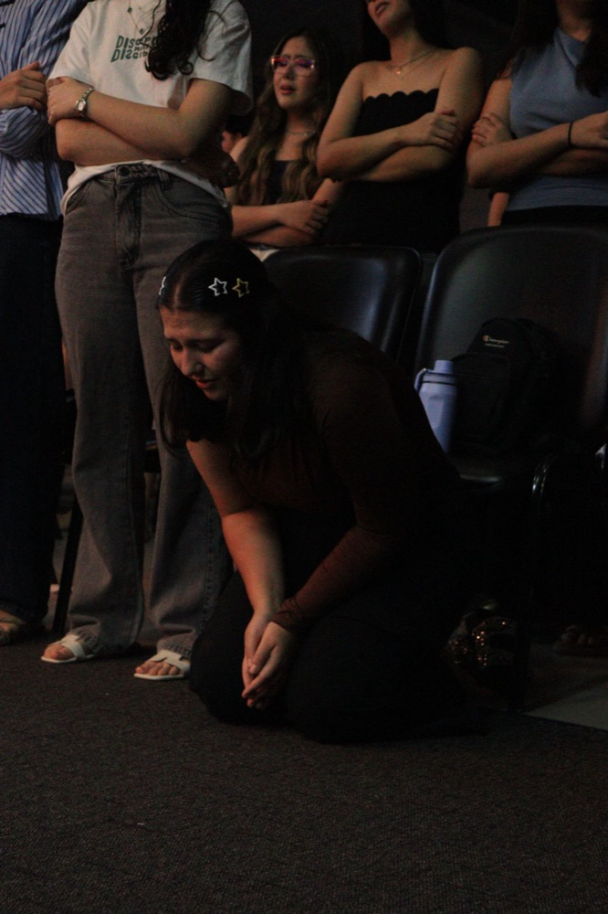
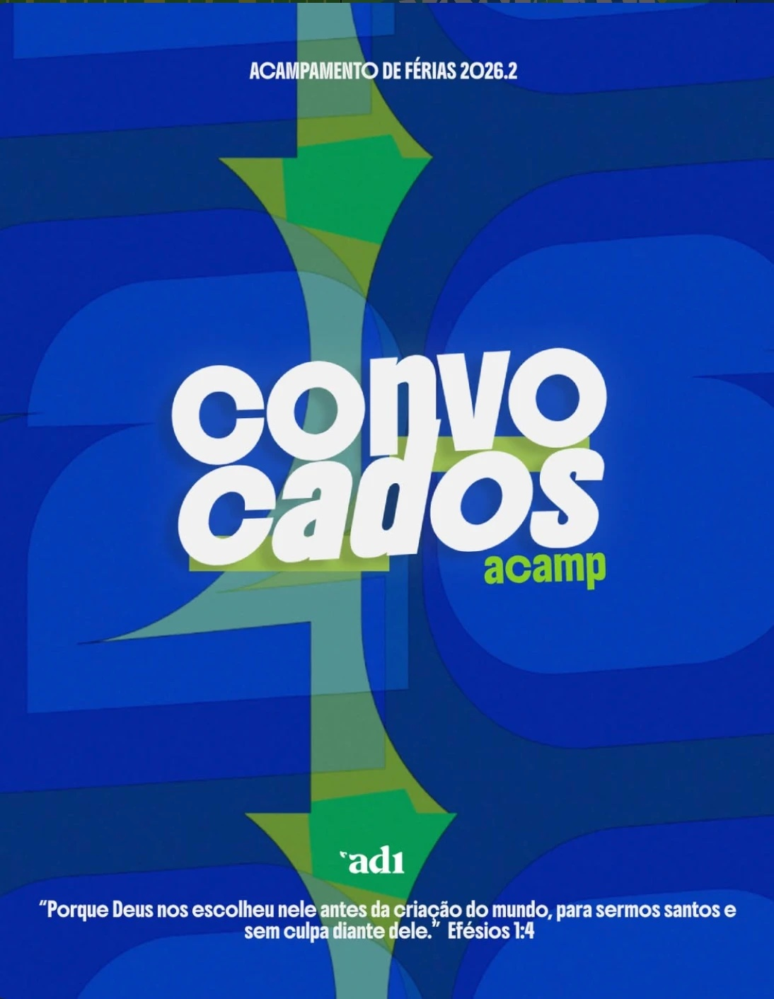
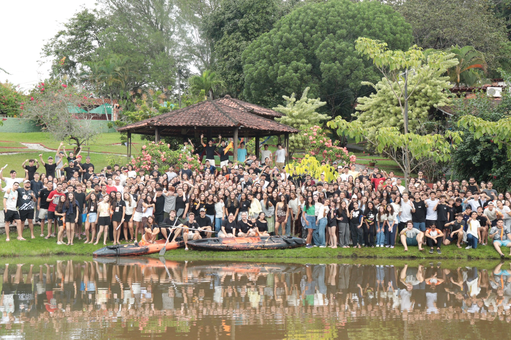

Louvor
Adoração em equipe, com a banda dos próprios adolescentes e espaço para cantar de coração.
Primeira Igreja Batista de João Pessoa · AD1
O culto dos adolescentes: louvor de verdade, a Palavra sem enrolação e amigos que caminham com você.
Sem formalidade que afasta. Com verdade que transforma.

Adoração em equipe, com a banda dos próprios adolescentes e espaço para cantar de coração.

Mensagens diretas sobre fé, identidade, escolhas e futuro, com linguagem da sua realidade.

Dinâmicas, conversas e amizades que fazem da igreja um lugar onde você é conhecido pelo nome.

Descubra seus dons e sirva: ministérios, projetos e ações que fazem diferença na cidade.
Quem lidera
Líder do ministério de adolescentes da AD1
Venha conhecer de perto quem caminha com a gente e abre a Palavra todas as sextas.
Quero conhecerUma ideia geral do fluxo — o ritmo é leve e acolhedor.
Acampamento de Férias 2026.2
“Porque Deus nos escolheu nele antes da criação do mundo, para sermos santos e sem culpa diante dele.” Efésios 1:4


Além do culto toda sexta, a gente vive momentos assim: acampamentos que marcam a vida.
“Ninguém despreze a sua mocidade; mas seja exemplo para os fiéis.” 1 Timóteo 4:12
Tudo que você precisa saber antes da primeira vez.
Às 19h30.
Em torno de 2 horas.
O culto é voltado para adolescentes de 12 a 19 anos.
Toda sexta-feira.
Pode! Adolescentes e seus amigos são bem-vindos.
Pode vir sozinho ou trazer um amigo. Você será bem recebido.
Toda sexta-feira
às 19h30
Espaço Gospel
Ver no mapa →
Adolescentes e seus amigos. Todo mundo é bem-vindo.
Delmiro Maia
@adolescentesdaprimeira